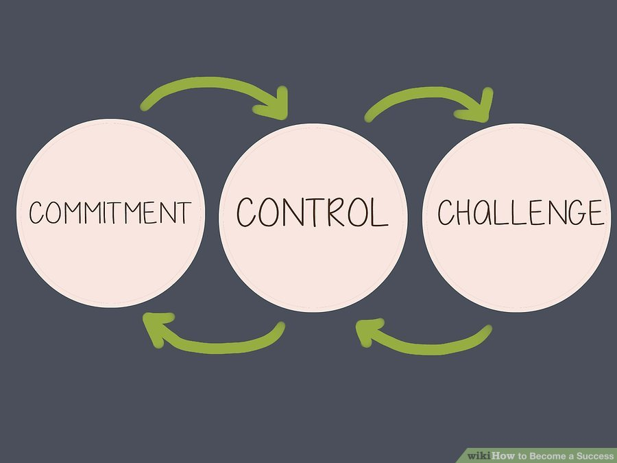
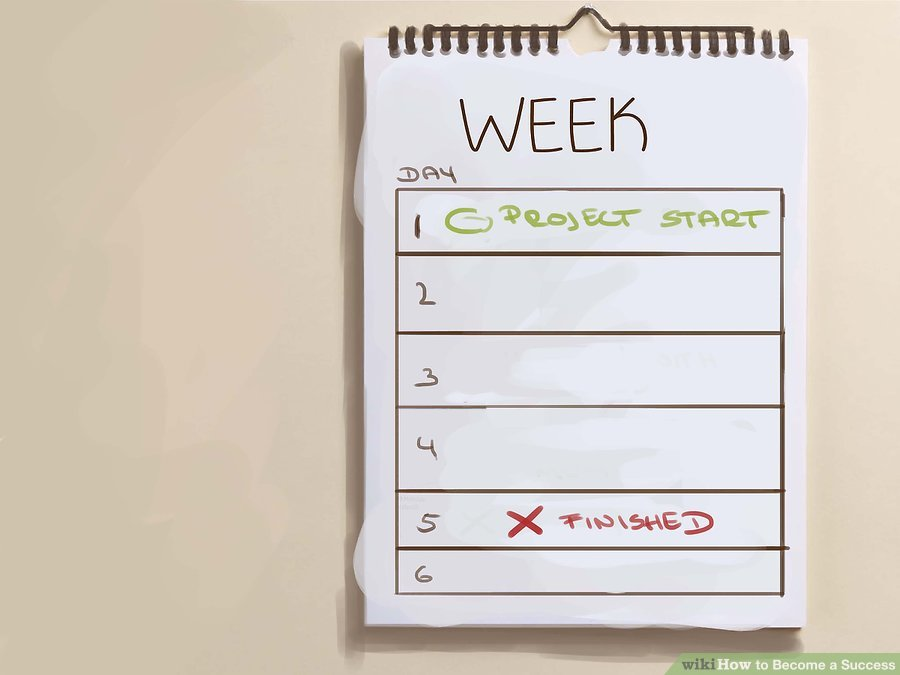
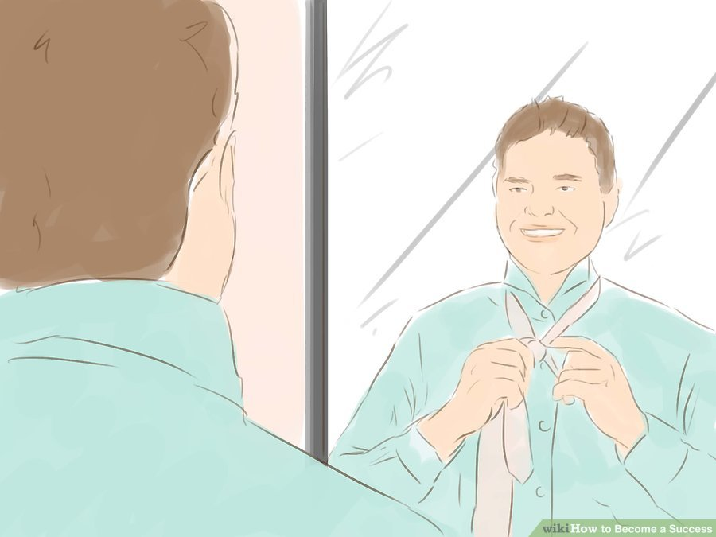
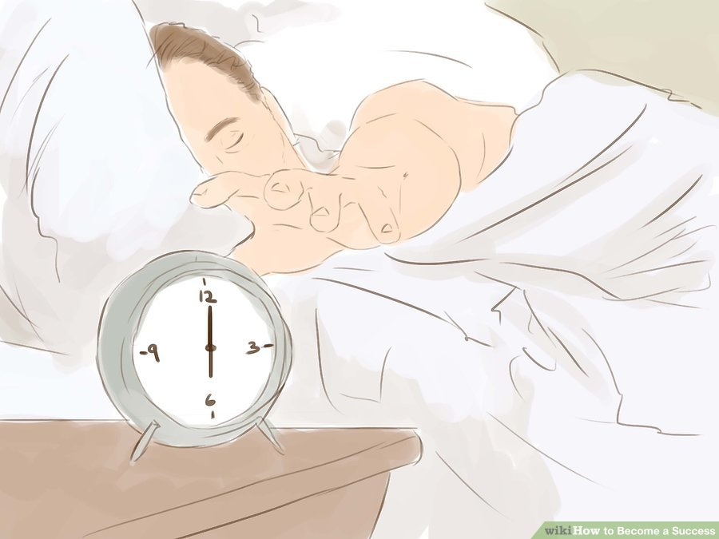

While there is no single secret to success, successful people do have many traits and habits in common with one another. Emulating the habits of successful people, and theorizing how to be more productive in your own life, can help you become a successful in whatever you pursue.
Part 1 of 3: Attaining Success through Healthy Living
- Get up early. U.S. founding father and successful businessman Ben Franklin said "Early to bed and early to rise, makes a man healthy, wealthy and wise." Research has shown that getting up early makes you more conscientious and improves problem-solving, while also ensuring you get the most from every hour of the day.[1] Some tactics that can help you consistently get up earlier are:1.Organize evenings to go to bed at a reasonable hour (that includes ending use of electronics one hour before bedtime).2.Don't hit the snooze buttons. Instead, put your alarm clock or timing device on a table across the room from where you sleep, forcing you to get up with the alarm goes off.
- Exercise. Successful people understand that being at their best means taking care of their body, and this includes regular exercise in order to derive the following benefits: It reduces depression It improves energy levels and fights fatigue. It improves immune responses and prevents disease. It teaches discipline and dedication to goals. If you don't have time for a dedicated workout schedule, make small changes, like taking the stairs or walking as opposed to driving to a nearby location, to contribute to a healthy lifestyle.
- Introverted behavior is a sign of a normal social temperament, characterized by a preference for solitude. Introverts are task-oriented, and typically more engaged in solitary reflection and less engaged by interacting with others. While introverts may seem to display some of the superficial characteristics of antisocial behavior, there is no direct link between the two.
- Nurture emotional and mental health. Research shows that a foundation of emotional health is crucial to overall confidence, which is a key component of successful professional ventures. In other words: Success doesn't create happy people; happy people create success.[8] Below are a few suggestions for how to take charge of your happiness and create success:[9] Commitment: In this context, commitment means an attitude of remaining involved, despite challenges and set-backs. It means refusing to be isolated in self-doubt and, instead, using disappointments as a driving force behind current and future efforts. Control: Control means refusing to be powerless. It means embracing tasks and the corresponding struggle, attempting to influence outcomes as opposed to simply letting outcomes happen. Challenge: Challenge reflects an indomitable attitude of viewing instances of stress, whether positive or negative, as fodder for learning and and evolving. 
- Devote yourself to schoolwork, or your work. Usually, being antisocial is a by-product of being obsessed with other things and forgetting to socialize, or simply not having the time to socialize, not a goal in and of itself. But if you want to be less attached to your social commitments, the best and most productive way to do it is to throw your attention and your effort into school or work, and forget everything else.
- Instead of going home and chatting with friends on Facebook or going out, do your homework, or come up with new ideas for streamlining processes at work. Better yet, stay late at the office, or head to the library to study.
- Work-obsessions don't actually have to be work or school related. Find topics or hobbies that interest you and get lost in them. Spend your evenings building model trains or writing code or making synth epics instead of socializing.
- Be alone in public, occasionally. There's a difference between being antisocial and being a complete hermit. Unless you want to lose track of all social cues and become a total weirdo, it's good to spend some time in public, not socializing.
- Go to the library to sit and read the paper, instead of getting it delivered to your house. This is a solitary activity, but you can do it in public and get a little people-watching in to feel like you're not completely alone.
- Go out to eat occasionally and sit at the bar alone. Bring a book, if you're concerned about feeling embarrassed, even though there's no need to be sheepish.

Part 2 of 3: Attaining Success as a Mental Process
-

- Visualize a plan. Take time to plot out the course of each day. More than just list building, actually visualize the steps you will take to complete important projects and tasks. Research has shown that visualizing activities increases the speed and success of task completion, meaning that when you visualize your plan, you are able to get more done each day.[10] Below are suggested ways to harness visualization for success: Focus your mind on the personal attributes you'll need to be successful. Regardless of whether you are the president of a bank or a school's PTA, there are attributes that all successful people share. Listening, learning, communicating, delegating, organizing, just to name a few, and the kinds of skills that successful people possess. Imagine what success will look like. Are you striving to be a successful interior designer, or stay-at-home parent? In either case, it's important to visualize what success will look like for you, down to details like what you'll be wearing and who else will be present. Use affirmations. Vision corresponds with verbal and written affirmations. For example, if you want to be a successful golfer, close your eyes and repeat to yourself "I can see myself on the green. I am comfortable and confident and prepared to swing. When I hit the ball, it goes exactly where I want it to. It lands on the green, 2 strokes ahead of par."
- Know why you want the things you want. Part of success is self-awareness and part of self-awareness is understanding the motives that drive your desires and behaviors.[11] It requires identifying your goals, what is gained by achieving them, and how those achievements positively impact your life. For example, if you want a promotion at work, ask yourself why. Is it for more money or greater personal achievement? Is it because you are trying to impress someone else? By thinking reflexively about your goal orientation, you may even find yourself re-assessing your needs and making smarter decisions.Thus, if you realize the reason you want a promotion doesn't actually correspond with the person you'll have to become to get it, re-consider your priorities and look for ways to maintain personal happiness while still achieving success.
- Re-prioritize. Write out a time budget that describes what you've done and how long it took for the past week. Take a hard look at where you are spending your time and effort. This includes time spent developing personal and professional relationships, which can play an important role in success.[12] Ask yourself if what you get back from your time investment warrants the effort you've put it. For example, is staying awake at night talking to your girlfriend helping you be more productive at the job you enjoy? Is working 40 hours a week as a teacher's aide fulfilling your personal desire to help children and make the world better? Adjust expectations and how to fulfill them. Ask yourself what tasks and responsibilities offer you the greatest overall satisfaction and write them down. Now look at your list and ask yourself what obstacles will you encounter to reach your goals. Are these obstacles things you have created yourself or are they challenges that will make you a better person? Are any of these obstacles things you can remove from your path in order to bring yourself closer to success?
- Embrace your passion. One pitfall to success is pursuing a goal because it brought someone else success, ignoring your own passion. This doesn't mean that you should act impulsively, but it does mean playing to your strengths and learning how to leverage your creativity and enthusiasm.[13] Good work yields good pay. Instead of aiming at jobs because they pay well, instead aim at jobs that you have enthusiasm for and that you can excel in. Excellence in any field will bring financial rewards. You are the product. When people invest in a company, it is rarely because the product they sell is indispensable. Rather, the person at the helm directing the project has vision and inspires confidence. When you embrace your passion, you highlight the key features of your character and skills that make you awesome. People respond to this, and will believe in you. Do it because you can't not do it. Think about what makes you want to wake up in the morning. Is it your role at work, your role as a parent, the hobby you tend in the evenings? Look for ways to marry what inspires you to a marketable skill or product and invent your own success.
- Learn to tolerate discomfort and delay reward. Mental strength does mean not having emotions. It means being aware of emotions you are having, but being strong enough to manage them in the face of unavoidable discomfort.[14] Be motivated. Do you have anxiety around new people? Are you bored with a current task that is key to the success of a larger project. Instead of saying "I wish I didn't have to do [x]," say, "I can get through this" or "Just take it one day at a time." Start small. Today you are refusing to watching television until after doing the dishes. A year from now, you are refusing to quit running during mile 14 of a marathon. Training for success is not a finger-snap. It's about maintaining standards and good habits over time and in all aspects of life.
- Reflect on your progress. In the same way that it is important to have a plan, it is equally as important to take a step back and reflect on what you've accomplished and what still remains to be done.[15] Keep a journal. Some activities such as journaling, list keeping, or using a calendar or vision board help reflection and keeping track of out path to success. Remember that reflection isn't easy. The whole point of reflecting on your road to success is not to pat yourself on the back but to critically assess whether you are meeting your milestones. If not, this may require adjustments to your original plan, or an entire overhaul of what you originally thought you'd be doing. Starting over isn't a loss. If upon reflection , you realize you are on the wrong path, it's time to visualize a new direction. Take stock of what you learned and figure out how to transition yourself away from the path you are on to one that more closely allies with your ambitions and talents.
- If you choose to date, make sure to be honest with people. If you're dating someone who likes to hang out with people on a regular basis, that might be a deal-breaker for both of you.
- Suspend your social network accounts. try to make sure there's as little web record of you as possible. Cancel or suspend your social networking accounts for the time being, and delete them if you're serious about this antisocial thing.
- Figure out your own solution to problems. The less you need to rely on other people for help, the more you'll be able to rely on yourself. Be as self-sufficient as possible and endeavor to find your own solutions to your problems, instead of asking other people for help.Google is your friend. If you don't know how to do something, research it and try to figure it out on your own. At least get informed about topics before you take it to an expert, or someone who's more experienced. 
- Know when to cut off relationships. In the movie Heat, Robert De Niro's bank robber likes to say that he doesn't have anything in his life he couldn't walk out on, if he saw the cops coming around the corner. If you want to live the solitary life, you've got to keep yourself unattached and distant. You might consider cutting off relationships when people get too close.
- Be a minimalist. To move around and stay as mobile as possible, try to limit your belongings as well as your social interactions. Think of it this way: the less shopping you do, and the less stuff you need, the less you'll need to be around people and deal with the consequences of all that stuff. Limit your buying and selling as much as you can. Simplify.
- Stop apologizing. You don't need to apologize for yourself and the way you are, or position yourself underneath others socially. If you're introverted and prefer being alone instead of going to parties and socializing, you don't need to attempt to "change" your behavior or yourself. Don't apologize for the way you are.
Part 3 of 3: Adopting the Habits of Success
- Learn from failure. Successful people aren't born; they are made through accumulated life experiences and that includes risk as well as failure. While acting impulsively is never recommended, taking calculated risks can pay off in the long-run. Even if you don't succeed at everything you undertake, studying failure and learning from it is a key feature of all successful people.[16][17] Steve Jobs was fired from Apple in 1985 in large part because he was difficult to work with. However, he returned 12 years later and turned the then-failing company into a success because he had become a better leader.
- Be proactive, not reactive. Research has linked personal success with proactivity. Therefore, instead of waiting for opportunity to find you, brainstorm ways to improve your life and career and act sooner rather than later.Below are some tactics for becoming more proactive:[19][20] Useful brainstorming techniques include freewriting, making lists, and mapping.[21] Anticipate what obstacles you will face and how to tackle them. Related to skills like visualizing is is prediction. When we realistically project a path to success, necessarily, we also project the pitfalls along that path. Prevent avoidable obstacles.While not all obstacles are avoidable, many can be circumvented by preparation, funding, and training in advance. Appreciate timing. Research shows that, just important as taking action, is learning when. Act too soon on something you are unfamiliar you, you may look unprepared or fool-hardy. Act too late and you may not get the opportunity to use your skills and demonstrate leadership.
- Surround yourself with successful people. Success doesn't happen in a vacuum. Every successful person has a long list of friends, teachers, mentors, co-workers, etc. who assisted them along the way. [23] Look to people you already have in your life who are talented, positive, supportive, motivated, and knowledgeable. Spend time learning from them and collaborating when possible. Internships, seminars, and job-shadowing are other great ways to interact with successful people and to learn from them. Maybe your goal falls outside of the rat race and you are looking for ways to be successful as a parent, or teacher. The rule is still the same. Find those people who are successful and who you admire. Spend time with them and learn what makes them tick. Emulate good habits to bolster your own ambitions. 
- Nurture strong, positive relationships. Are you attempting to improve delivery of a product or service to a client? Are you seeking out mentorship from other, more senior professionals? Are you looking to improve your skills as a competitive cyclist? Whether thinking logistically or personally, fostering strong relationships is an integral part of success, no matter what the playing field. The following tactics can help you grow these relationships in productive ways: Grow your personal network. While every entrepreneur knows that a strong brand and social media presence is key to professional success, these do not take the place of personal encounters, which are the most common source of opportunity and growth.[24] Foster relationships outside your serious aspirations. Think about your personal life as practice for managing people in professional or employment-related contexts. When you don't listen to the needs of family or aren't a loyal friend, these relationships fail to thrive. It's also important to seek out opportunities to develop relationships with new friends as well, so consider joining a club or attending a hobby meet-up.
Tips
- Take responsibility. When you outsource blame for your actions, you also take away the ability to take credit for your success.[27] Don't blame failures on outside forces. Instead, analyze what you did and how, next time, you could do it better. Remember that only you decide whether you succeed or fail.
- Ask questions and listen more than you talk. Asking questions is a great way to not only be a part of important conversations but it grows your knowledge and increases your likability, as it gives others the opportunity to share. Listening to others also gives you the ability to benefit from their expertise and utilize what you learn toward future tasks.
Warnings
- Being anti-social can turn on you. The unpopularity can make the whole school hate you, and in turn destroy your emotions.
Back to top